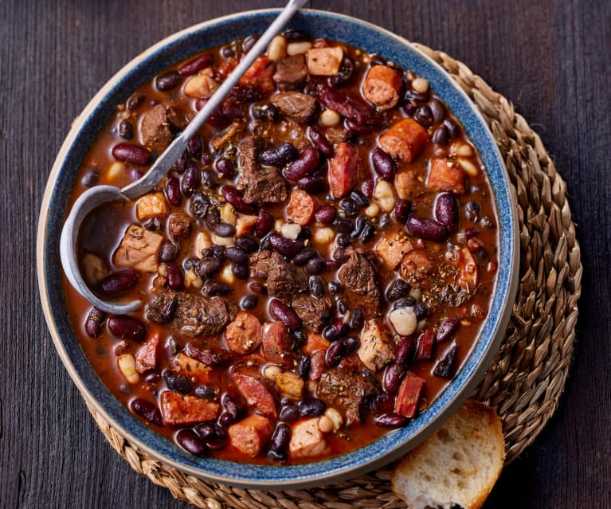

Moqueca
A moqueca é um prato tradicional da culinária brasileira, especialmente popular na região Nordeste e no Espírito Santo. É feita com peixe ou frutos do mar (como camarão e polvo), cozidos em um molho à base de azeite de dendê, leite de coco, tomates, pimentões, cebolas e temperos como alho e coentro. É servida com arroz branco e pode ser acompanhada de pirão.
Feijoada
A feijoada é um prato emblemático da gastronomia brasileira, associado à culinária das regiões Sudeste e Nordeste. É uma mistura de feijão-preto cozido com diversos tipos de carne, como linguiça, carne-seca, costela, bacon e às vezes até mesmo partes suínas como orelha e pé. É temperada com alho, cebola, louro e outros condimentos, resultando em um prato rico e saboroso, geralmente acompanhado de arroz, couve refogada, farofa, laranja e vinagrete.
Acarajé

O acarajé é uma iguaria típica da culinária baiana, especialmente associada à cultura afro-brasileira. É feito com uma massa de feijão-fradinho, temperada com cebola e sal, frita em azeite de dendê, resultando em uma bolinha crocante por fora e macia por dentro. Tradicionalmente, é recheado com vatapá (uma mistura de pão, camarão seco, leite de coco e temperos) e caruru (quiabo refogado com camarão seco, azeite de dendê e especiarias). É servido com pimenta e pode ser acompanhado por abará, uma variação cozida do acarajé.
Hotdog
O hotdog, também conhecido como cachorro-quente, é um lanche popular em todo o mundo. Consiste em uma salsicha cozida, geralmente de carne bovina ou suína, colocada em um pão especial alongado. Pode ser acompanhado por uma variedade de condimentos, como mostarda, ketchup, maionese, relish, cebola, milho, ervilha e queijo ralado.
Lasanha
A lasanha é um prato de origem italiana, composto por camadas de massa intercaladas com molho de carne (à bolonhesa), molho branco à base de queijo, molho de tomate e queijo gratinado. É uma refeição reconfortante e bastante popular em todo o mundo.
Escondidinho

O escondidinho é um prato tradicional da culinária brasileira, feito com purê de mandioca ou batata-doce na base, intercalado com camadas de carne seca desfiada, frango desfiado, carne moída ou outro recheio de escolha. Pode ser gratinado com queijo por cima e é uma opção muito saborosa e nutritiva.
Vatapá
O Vatapá é um prato típico da culinária baiana, feito com pão amanhecido, camarão seco, leite de coco, azeite de dendê, amendoim, castanha-de-caju, cebola, alho e especiarias. É cozido até obter uma consistência cremosa e é frequentemente servido como acompanhamento para o acarajé, caruru ou como parte de uma refeição principal.
Salada
A salada de Frutas é uma preparação culinária composta por vegetais crus ou cozidos, frutas, ervas, temperos e molhos. É uma opção saudável e refrescante, podendo incluir ingredientes como alface, tomate, pepino, cenoura, rúcula, espinafre, abacate, pimentão, entre outros.
Pizza

A pizza é um prato de origem italiana, composto por uma base de massa de farinha de trigo fermentada, coberta com molho de tomate e uma variedade de ingredientes como queijo (geralmente mussarela), pepperoni, presunto, cogumelos, cebola, pimentão, azeitonas e outros. É assada em forno alto até que a massa fique crocante e o queijo derreta.
Legumes
Legumes são alimentos provenientes de plantas, geralmente consumidos cozidos, crus ou em preparações como sopas, ensopados e saladas. Incluem uma variedade de vegetais como cenoura, brócolis, abóbora, ervilha, feijão-verde, batata, berinjela, entre outros, e são ricos em nutrientes essenciais para a saúde.